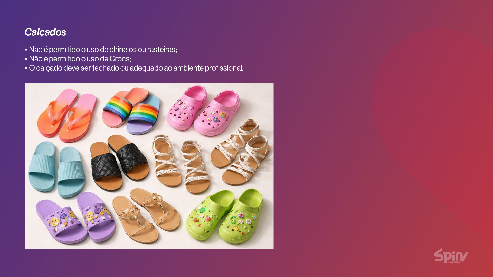
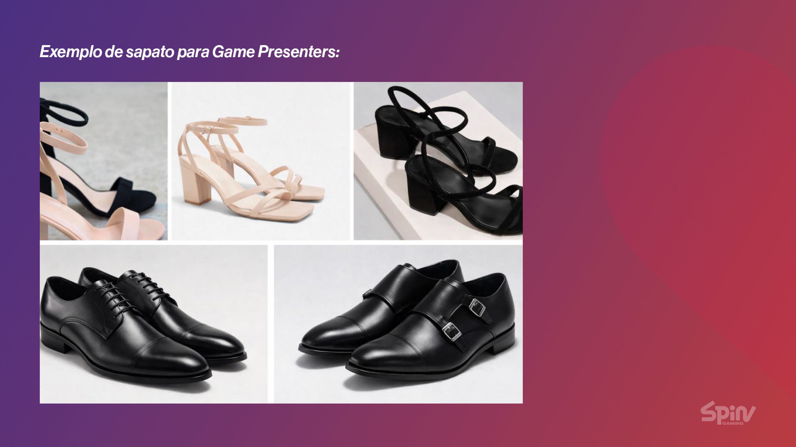
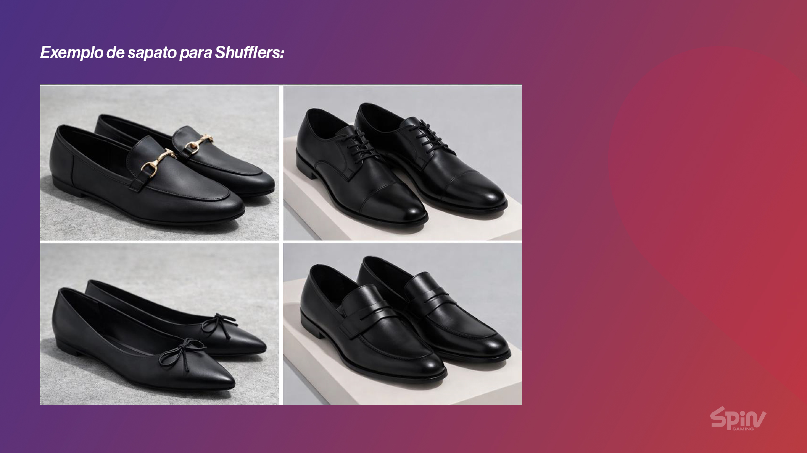

1. Kit oficial
Somente figurino Spin, completo, do estúdio em que você está escalado. Nada pessoal no lugar das peças.
Manual Academy · Imagem
Game Presenters · Shufflers · Service Manager e Shift Leader em câmera
Guia prático para retirar, vestir, conservar e apresentar o figurino oficial — kit completo, limpo e no padrão do estúdio escalado.
Spin Gaming · Uso interno · Alinhado à Política Interna de Figurino e Uniforme v1.2 · Composição por estúdio: guias complementares
Leitura rápida antes do turno — a regra completa está na Política Interna.
Este manual cobre o uso geral do figurino Spin: retirada, conservação, conferência, calçado ao vivo e segurança. A composição do kit (peças, cores, caimento peça a peça) varia por estúdio — consulte o guia do seu estúdio (Blaze, CDA ou Sports Club) e o cadastro em Figurinos. Na dúvida, fale com a liderança ou a equipe de Figurinos antes de entrar em câmera.
Somente figurino Spin, completo, do estúdio em que você está escalado. Nada pessoal no lugar das peças.
Peça limpa, sem mancha, rasgo ou amassado. Não alterar, cortar nem customizar.
Checklist visual antes do estúdio. Troca imediata se algo estiver fora do padrão.
Fluxo Figurinos: retirada registrada → vestir e conferir → operação → devolução com condição da peça informada no sistema.
Antes do turno · durante · ao finalizar
Higiene Spin + zelo seu durante o turno
Evite atrito em superfícies ásperas, dobras que gerem vincos profundos e contato com substâncias que manchem ou rasguem.
Sem cortes, barras caseiras, amarrações, adesivos, tintura ou costura improvisada. Etiquetas internas de controle permanecem.
Checklist rápido — peça reprovada se qualquer item falhar
Irregularidade? Substituir ou encaminhar para manutenção — não autorizar uso em câmera.
Quando integrantes do kit do estúdio
Regra: meia-calça e cinto seguem o kit do estúdio. Se não constarem no seu guia de estúdio, a liderança confirma.
Game Presenter e Shuffler — modelo indicado por estúdio

Exemplos visuais — confirme o modelo oficial do seu estúdio com a liderança


Importante: estes slides são referência de padrão profissional. O guia do seu estúdio prevalece sobre detalhes de modelo e cor.
Figurino completo no estúdio · nunca na rua
Proibido sair à rua ou área externa com figurino oficial — medida de segurança para evitar reconhecimento indevido.
Conduta: o figurino representa a Spin perante operadoras e jogadores. Comportamento profissional em todas as áreas operacionais visíveis.
Composição do kit, caimento peça a peça e fotos de referência
Cada estúdio tem material próprio com as peças oficiais (camisa, calça, colete, vestido, gravata, acessórios) e guias de caimento. Este manual geral não substitui o guia do estúdio em que você opera.
Kit e caimento do estúdio Blaze — traje social / vestido conforme cadastro Figurinos.
Guia complementarKit Casa de Apostas — composição e ajustes específicos do estúdio.
Guia complementarKit network Sports Club — peças e padrão visual do estúdio.
Guia complementarFonte base: slides de caimento e Dress Code Spin (10/02/2026) em fontes/ — serão adaptados por estúdio nos guias complementares.
Antes de entrar em câmera
Dúvida? Liderança ou equipe de Figurinos — antes do turno, não improviso em câmera.